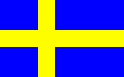
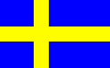

Formal Power Series and Algebraic
Combinatorics,
Linköping University, (Sweden)
June 23-27 2003
 
and its local copy

and its local copy
 List of Papers
List of Papers Invited Speakers:
Imre Bárány (Hungary)
Fan Chung (USA)
Johan Håstad (Sweden)
Olle Häggström (Sweden)
Alain Lascoux (France)
Pierre Leroux (Canada)
Isabella Novik (USA)
Ron Shamir (Israel)
Richard Stanley (USA)
Organizing Committee:
Svante Linusson (Sweden)
Hélène Barcelo (USA)
Art Duval (USA)
Jonna Gill (Sweden)
Johan Wästlund (Sweden)
Erik Ouchterlony (Sweden)
Johan Thapper (Sweden)
Program Committee:
Kimmo Eriksson (Sweden)
Anders Björner (Sweden)
Svante Linusson (Sweden)
Ron Adin (Israel)
Jörgen Backelin (Sweden)
Hélène Barcelo (USA)
Francois Bergeron (Canada)
Norman Biggs (England)
Ian Goulden (Canada)
Guoniu Han (France)
Masao Ishikawa (Japan)
Jean Christophe Novelli (France)
Dennis Stanton (USA)
Einar Steingrimsson (Sweden)
Bob Sulanke (USA)
Helge Tverberg (Norway)
Volkmar Welker (Germany)
Julian West (Canada)
Staphanie van Willigenburg (Canada)
Günter Ziegler (Germany)